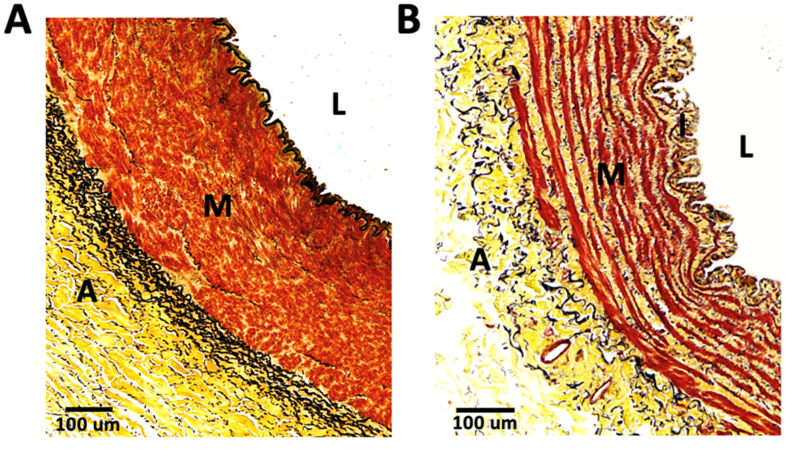
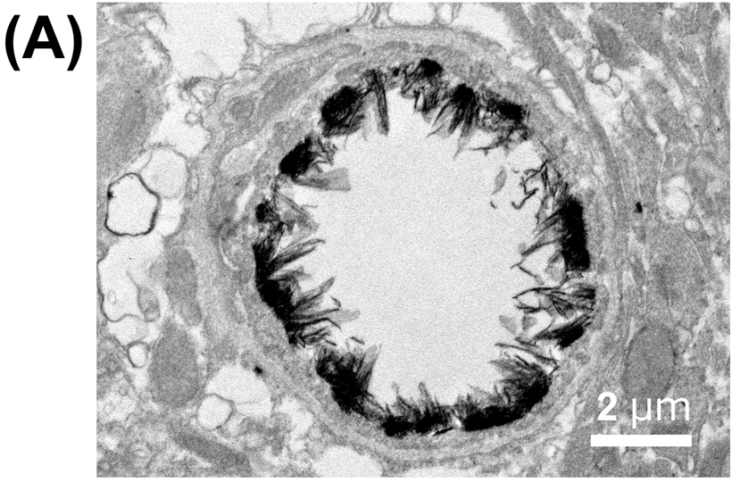
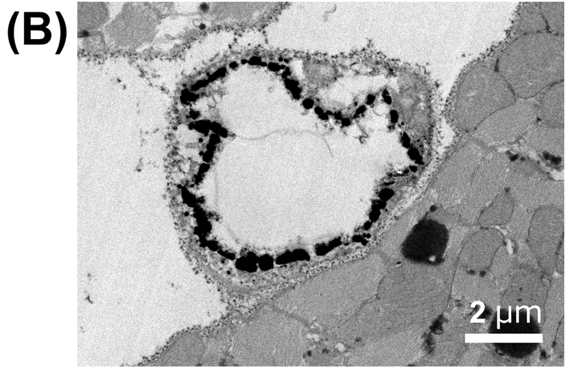
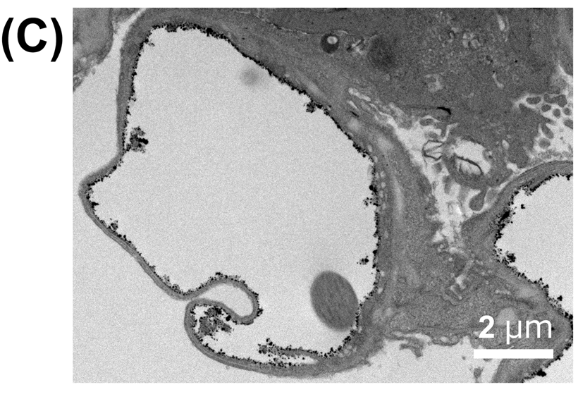

Vessel walls and capillary surfaces
Human artery–vein sections show regional wall organization. A separate mouse study shows stained ultrastructure at the capillary lumen. These specimens and methods describe different structural scales.
A muscular wall and a connective-tissue-rich wall

L: lumen · M: media · A: adventitia. The thin intima has no separately resolved printed I in this field.
L: lumen · I: intima · M: media · A: adventitia. Panel letters A/B identify images; the A within tissue means adventitia.
Cells red · collagen yellow · elastin black. Each field retains its own 100µm bar.
Compare the compact muscular media in the arterial field with the interspersed muscle bundles and connective material in the venous field. The source labels locate regions of these partial walls; they do not outline complete vessels.
These are postmortem organ-donor specimens. The cohort includes hypertension and diabetes; the photographed donors are not individually identified. Formalin fixation, paraffin sectioning and staining determine the appearance. Wall proportions here do not establish universal artery–vein differences, physiological lumen diameter, pressure, compliance or flow.
Rojas et al. (2024), Single-Cell Analyses Offer Insights into the Different Remodeling Programs of Arteries and Veins, Cells 13:793, Figure 1A/B. Owning article · CC BY 4.0. Exact crop of the publisher image; source labels, colours and calibration bars retained.
The lumen-facing surface differs between organs



Ten-week-old male C57BL6 mice; baseline continuous capillaries. The study’s separate LPS-injury images are not shown.
Lanthanum-containing perfusion fixative makes glycocalyx-associated ultrastructure visible. Black deposits are not natural tissue colour.
Each panel retains its 2µm bar. Organ and glycocalyx identification come from the source caption; no new anatomical leaders are added.
These fixed sections do not measure the thickness or shape of a living hydrated glycocalyx. The brain is a specialised blood–brain-barrier case. Neither the images nor their organ differences show fluid flux, oncotic pressure or the complete revised Starling mechanism.
Ando et al. (2018), Brain-Specific Ultrastructure of Capillary Endothelial Glycocalyx and Its Possible Contribution for Blood Brain Barrier, Scientific Reports 8:17523, Figure 2A–C. Owning article · CC BY 4.0. Exact panel crops; original labels and bars retained. The article’s quantitative graph is separate from these micrographs.